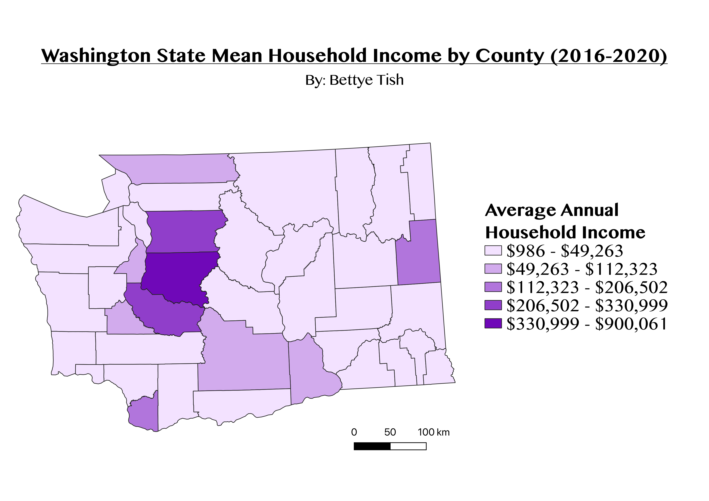

Homework 6: Census data choropleth
Bettye Tish
This chloropleth shows the average annual household income throughout Washington State over five years (from 2016 to 2020). It utilizes data from the U.S. Census, which has been joined to a shapefile of Washington counties. The map is projected in the CRS NAD83 which is one of two UTM zones that the state falls in. I selected the color purple for the legend color gradient because it symbolizes wealth.

Data used for this project:
CSV dataset
Link to geojson